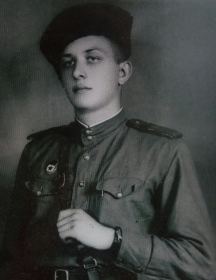

На этом сайте вы можете познакомиться с ветеранами-учителями Столинской гимназии, которые ценою своей жизни защищали нас от фашистского врага, что ворвался в нашу страну, в наш дом, в нашу семью. Многие из солдат не вернулись домой, но они живы в наших сердцах, пока мы помним их. И мы не имеем права забывать о их подвиге!
Ветераны. Герои.
И просто люди с большой буквы

Сиомко Виктор Антонович
1926 - 2009
Награждён орденом Славы IIIст.

Ободовский Николай Адамович
1900 – 1951
Награждён орденом Красной Звезды.

Харитонюк Андрей Васильевич
1920 - 2006
Награждён орденом Великой Отечественной войны 2 степени, медалью «За трудовые заслуги» и многими юбилейными наградами.
Голубков Сергей Александрович
1907 - 1984

Романовский Михаил Фёдорович
1924 - 2006
Награждён орденом Красной Звезды, орденом Отечественной войны II степени, медалью «За отвагу», медалью «За взятие Будапешта» и другие.

Барабошин Михаил Александрович
1919 - 2003
Награждён медалью «Партизану Отечественной войны», Орденом Отечественной войны II-й степени и другие.